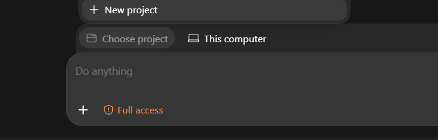
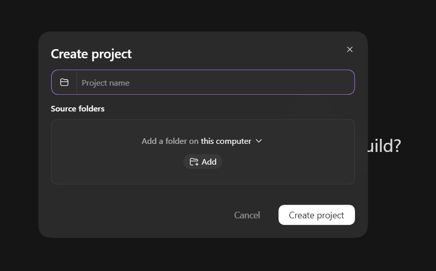
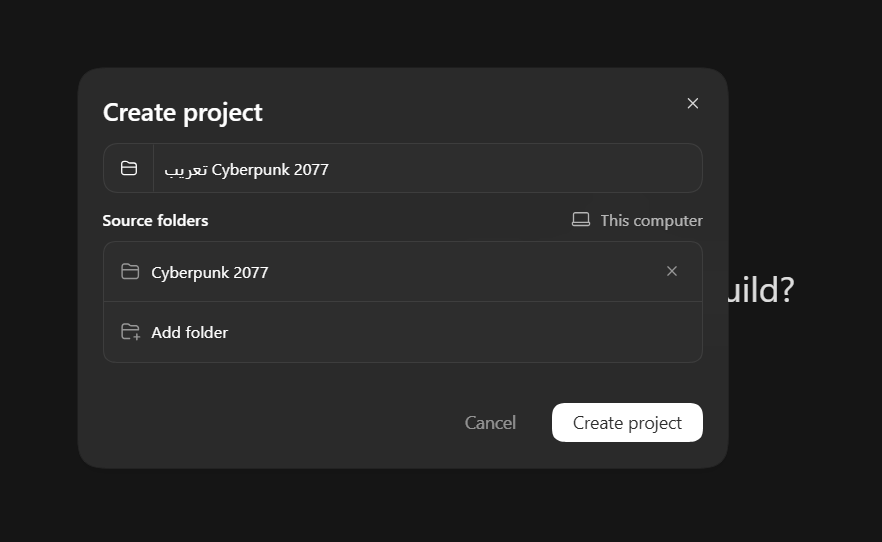
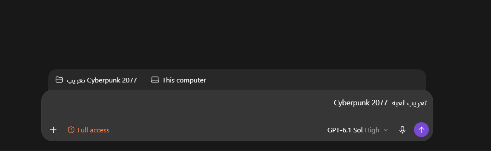
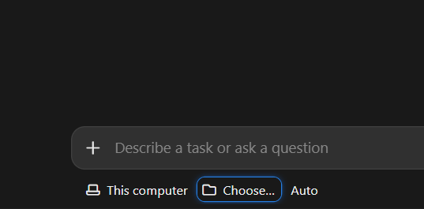

الشرح والتثبيت
من مجلد فارغ إلى أول طلب تعريب في دقائق. تحتاج نسخة أصلية من اللعبة، و Git، و Python 3، و Claude Code أو Codex.
ما تحتاجه
- نسخة أصلية من اللعبة على جهازك.
- Git و Python 3، مع المكتبات:
pip install -r requirements.txt - اشتراك في Claude Code أو Codex، أو كليهما.
تنزيل القالب
اختر مجلدًا على جهازك لتنزيل القالب، مثل مجلد باسم Arabic Game. افتح الطرفية داخله وشغّل:
git clone https://github.com/abdallah28r/taarib.git cd taarib pip install -r requirements.txt
مجلد لكل لعبة
سيظهر مجلد باسم taarib. غيّر اسمه إلى اسم اللعبة التي تريد تعريبها، مثل Cyberpunk 2077. لكل لعبة نسخة مستقلة من القالب؛ واحتفظ بالأصل نظيفًا إن أردت تعريب ألعاب أخرى.
افتحه في وكيلك
افتح الوكيل الذي ستعرّب به، ثم اتبع قسمه:
في Codex
افتح محادثة جديدة، واختر «New project» لإنشاء مشروع جديد.

أضف مسار المجلد الذي غيّرت اسمه (في هذا المثال Cyberpunk 2077، وكان اسمه taarib)، واختر اسمًا للمشروع مثل «تعريب Cyberpunk 2077».

تأكد أن المجلد هو المجلد المضاف، ثم اضغط «Create project».

افتح محادثة جديدة داخل المشروع واكتب طلب التعريب.

في Claude Code
افتح محادثة جديدة في Claude Code، واضغط «Choose…» واختر المجلد الذي غيّرت اسمه (في هذا المثال Cyberpunk 2077).

اطلب التعريب
اكتب «عرّب اللعبة». يسألك الوكيل مجموعة أسئلة واحدة في البداية: اسم اللعبة ومكانها، وهل الصور ضمن التعريب، وهل يشغّل اللعبة بنفسه، وكيف يعمل وكلاؤه الفرعيون. بعدها يعمل وحده.
ماذا يحدث بعدها
- يسألك مرة ليريك تجربة أولى: القائمة الرئيسية وأول مشهد بالعربية داخل لعبتك.
- ويسألك مرة أخيرة لتجرّب النسخة كاملة وتقبلها.
- وبينهما تتابع كل شيء من صفحات المتابعة في مجلد اللعبة.